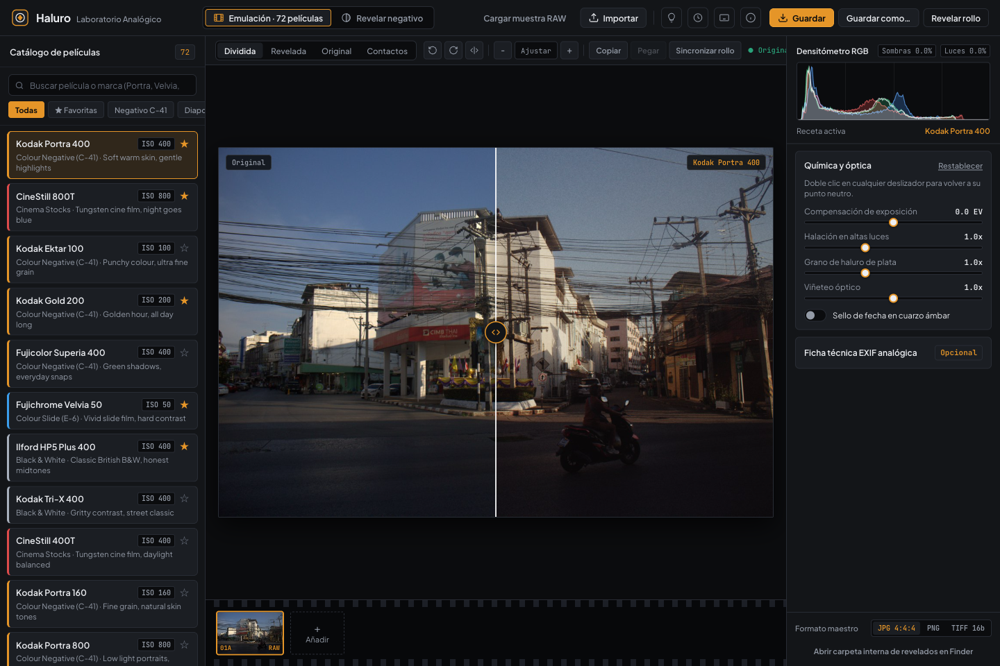
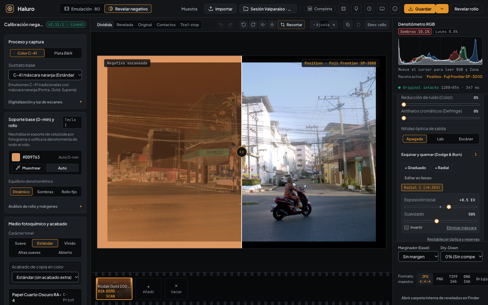
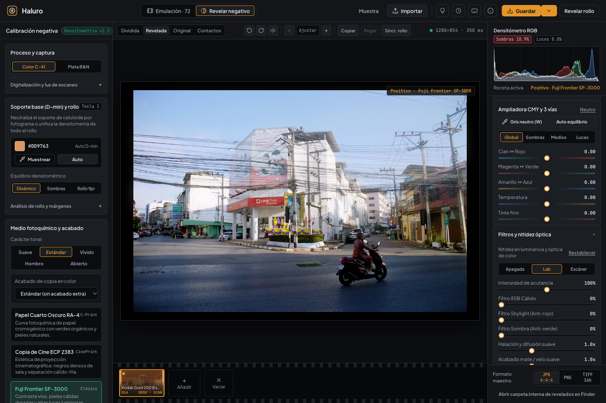
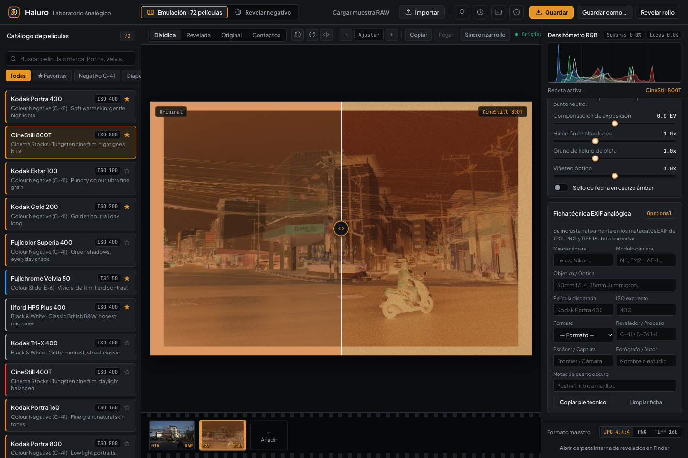
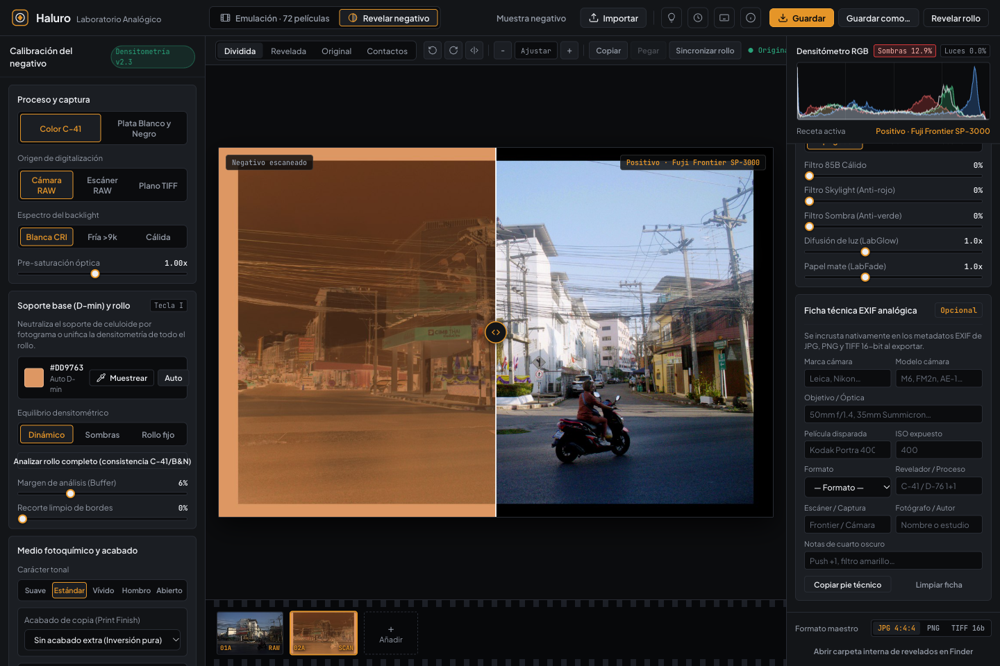

Guía maestra de inversión fotoquímica, neutralización de soporte base (D-min), ampliadora dicroica CMY y catálogo de 72 emulsiones clásicas.
Haluro se distribuye como una aplicación nativa optimizada tanto para computadores Apple como para estaciones de trabajo con Windows 11.
Dispones de dos archivos instaladores optimizados:
Haluro-2.4.1-macOS-arm64.dmgHaluro-2.4.1-macOS-x86_64.dmgMonta el DMG y arrastra Haluro a tu carpeta Aplicaciones.
Instalador oficial disponible:
Haluro-Setup-2.4.1-Win11-x64.exeHaluro-Portable-2.4.1-Win11-x64.zipSe integra automáticamente con Microsoft Edge WebView2 y el modo oscuro de Windows 11.
Al ser una aplicación independiente y artesanal sin suscripción corporativa de Apple, el sistema mostrará: «Apple no pudo verificar que Haluro no contenga software malicioso». Para autorizarla por única vez:
Atajo por Terminal: xattr -cr /Applications/Haluro.app
La pantalla principal recrea una mesa de luz de laboratorio profesional con calibración de color neutro y fondo antideslumbrante.

Arrastra uno o varios archivos RAW (.CR2, .NEF, .ARW, .RAF, .DNG) o imágenes ráster (.TIFF 16-bit, .JPG) directamente al centro de la mesa de luz. También puedes usar el atajo ⌘ + O (Ctrl + O en Windows).
Modo Negativo: Para rollos digitalizados en su estado virgen invertido (con máscara naranja o soporte de B&N).
Modo Darkrooms: Para aplicar el catálogo de las 72 películas analógicas sobre positivos o fotografías digitales.
Pasa el puntero por cualquier región de la fotografía para leer los valores de luminancia y densidad RGB en el densitómetro flotante en tiempo real.
| Atajo (macOS) | Atajo (Windows) | Función en el Laboratorio |
|---|---|---|
| ⌘ + O | Ctrl + O | Abrir explorador para cargar negativos o positivos |
| I | I | Activar cuentagotas para muestreo de soporte base D-min |
| \ | \ | Alternar vista comparativa en vivo (Antes / Después) |
| Espacio + Arrastrar | Espacio + Arrastrar | Moverse (Pan) sobre la mesa de luz con aumento |
| ⌘ + 0 | Ctrl + 0 | Ajustar fotografía completa a la pantalla |
| ⌘ + 1 | Ctrl + 1 | Zoom al 100% (inspección de cristales de plata y grano) |
| ⌘ + S | Ctrl + S | Exportar copia positiva de alta resolución |
| R | R | Girar fotograma 90° en sentido horario |
A diferencia de los editores genéricos que simplemente aplican una curva invertida en X, Haluro modela la física de transmisión lumínica del acetato y la reducción fotoquímica.

En toda película color (C-41), los acopladores cromógenos no expuestos forman una máscara naranja que bloquea longitudes de onda azules. El paso más importante para lograr colores fieles es muestrear este soporte virgen:
Pulsa la tecla I o haz clic en el icono del cuentagotas en el panel izquierdo (Soporte base y rollo).
Haz clic en el reborde virgen perforado o en la franja negra sin exponer entre fotogramas. Haluro deducirá la absorción exacta del sustrato y normalizará el histograma en 16 bits.
Emula el legendario escáner japonés de laboratorio Minilab. Tonos de piel luminosos, sombras apasteladas, verdes orgánicos y una transición muy gradual en altas luces. Ideal para retrato y bodas.
Emula el escáner de alta producción Noritsu. Mayor contraste en la zona recta de la curva, negros densos y profundos, y máxima acutancia óptica. Ideal para paisaje y calle.
El panel derecho recrea los mandos de filtración de una ampliadora clásica de color para equilibrar el positivado.

Modifica las densidades cromáticas con precisión de laboratorista:
Aísla la corrección cromática por zonas de luminancia: limpia el color de las sombras oscuras sin descalibrar el cielo o los tonos de piel en los medios tonos.
En el Modo Darkrooms, Haluro pone a tu disposición un catálogo de 72 emulsiones icónicas con sus curvas características sensitométricas (pie, zona recta y hombro).

Kodak Portra 160 / 400 / 800: Máxima fidelidad en tonos de piel y transiciones suaves.
Kodak Ektar 100: Grano ultrafino y colores vivos e intensos.
Kodak Gold 200 & ColorPlus: Tonos cálidos y nostálgicos de época.
Fujicolor Pro 400H: Sombras cian y altas luces delicadas.
CineStill 800T: La emulsión cinematográfica nocturna por excelencia, con halación roja en faroles y luces artificiales.
CineStill 50D: Grano imperceptible para luz de día.
Kodak Vision3 250D / 500T: La base del cine moderno.
Kodak Tri-X 400: Contraste rudo, negros profundos y textura de fotoperiodismo.
Ilford HP5 Plus: Sombras abiertas y flexibilidad tonal.
Ilford FP4 Plus 125: Detalle fino para estudio y naturaleza.
Fomapan 100 / 400: Plata clásica de tradición centroeuropea.
Kodak T-Max 100 / 400: Cristales planos T-Grain sin grano invasivo.
Ilford Delta 100 / 400 / 3200: Resolución geométrica estricta.
Fuji Velvia 50: Saturación legendaria para paisajes.
Kodachrome 64: La paleta legendaria de National Geographic.
Cada efecto fotoquímico en Haluro se genera a partir de modelos físicos del comportamiento de la luz y la plata coloidal.

Modela el rebote interno de fotones contra la base de película cuando falta la capa antihalo (como en CineStill). Genera un halo rojizo difuso en bombillas, faroles y reflejos solares.
Elige entre cristales Cúbicos (textura orgánica y tridimensional) o cristales planos Tabulares T-Grain (textura moderna y microscópica). Modula intensidad, tamaño y acutancia.
Conserva la memoria histórica de tus rollos incrustando los datos de la toma analógica directamente en el archivo digital.
Cámara Clásica: Leica M6, Pentax 67, Canon AE-1...
Lente Analógico: Carl Zeiss Planar 80mm f/2.8...
Emulsión: Kodak Portra 400...
Rollo / Fotograma: Rollo #04 - Frame 12
Revelado / Químico: D-76 1+1 @ 20°C (10m 30s)
Fecha de Toma: Fecha original de exposición
Sin compresión con pérdidas y con la máxima profundidad de color de 16 bits por canal. Es el formato recomendado para impresión de bellas artes, archivo patrimonial o retoque posterior en Photoshop.
Genera un archivo con perfil sRGB calibrado para que los colores se vean exactamente iguales en pantallas Retina, teléfonos inteligentes y plataformas como Instagram o 500px.
Ajusta el primer fotograma (muestreo D-min y cabezal dicroico), haz clic en «Guardar Ajustes de Rollo» en el panel izquierdo y luego arrastra el resto de fotos a la mesa de luz. Pulsa «Aplicar por Lote y Exportar» para procesar todo el carrete en segundo plano.
En el panel derecho, pulsa el botón «Equilibrio de escena (Sin bordes)». El algoritmo analizará la distribución de densidades de las sombras profundas para estimar matemáticamente el sustrato base sin necesidad del borde perforado.
Sí. En la parte superior del inspector derecho encontrarás el botón «Guardar Preset». Puedes almacenar perfiles personalizados (por ejemplo, «Mi Portra 400 + Frontier + Grano Fino») para reutilizarlos en un clic.